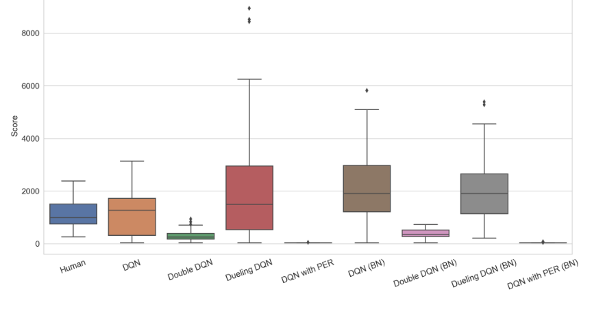

Reinforcement Learning and Video Games
强化学习技术在游戏场景下的实践与应用
Created by Yue Zheng from University of Sheffield
概述
通过结合强化学习和深度学习的方法，智能体在游戏领域已经超越了人类专家的水平。这一点,通过DeepMind在围棋比赛中的获胜以及智能体在雅达利游戏中表现得到了证明。深度学习技术解决了多年来一直阻碍强化学习发展的高维输入问题。在本研究中,我们结合了这两种技术,创建了几种不同算法的智能体,并让这些智能体学会了玩T-rex Runner游戏。我们实现了深度Q网络算法及其三种改进类型,以训练这些智能体。虽然其中一些结果并不尽如人意，但其他一些结果却优于人类玩家。此外,批量归一化是一种解决深度神经网络内部协变量偏移问题的方法，本研究也证明了它对强化学习的积极影响。
目录
- 项目目的及介绍
- 预备知识
- 实现方法
- 实验结果及讨论
- 结论及未来展望
1.项目目的及介绍
背景、目的、概述
游戏介绍
T-rex Runner是一款来自Google Chrome离线模式的恐龙游戏。玩家的目标是躲避所有障碍并获得更高的分数,直到达到极限。
项目目的
该项目的目的是创建一个使用不同算法(DQN,double DQN,DQN with prioritized experience replay,dueling DQN)的智能体来玩T-rex Runner并比较它们的性能。
- 创建智能体来玩 T-rex Runner
- 比较不同强化学习算法之间的差异
- 研究批量归一化在强化学习中的作用
2.T-rex runner所需知识
深度学习、神经网络、激活函数、反向传播算法、卷积神经网络、批量归一化
强化学习、马尔可夫决策过程、贝尔曼方程、探索和利用、TDL时序差分学习、Deep Q网络
深度学习
深度学习是一类基于人工神经网络（ANN）的机器学习模型。近年来广泛应用的深度学习模型有两种。递归神经网络就是其中之一，它在自然语言处理中展示了它的强大功能。另一个在深度强化学习中起着重要作用的模型称为卷积神经网络 （CNN）。它是应对计算机视觉问题（如物体检测和图像分类）最有效的模型之一。CNN在本项目中主要用于从图像数据中提取特征。
深度神经网络和激活函数
神经网络或多层感知器由三个主要组件组成：输入层、隐藏层和输出层。一层中的每个单元称为神经元。输入数据被馈入输入层，通过隐藏层中的权重进行线性变换。最后，通过激活函数将结果赋予非线性能力，并馈送到输出层。

批量规范化
随着神经网络深度的增加，训练时间变得更长。其原因之一是，在更新权重时，每层的输入分布会发生变化，这被称为内部协变量偏移（Internal Covariate Shift）。2015年，Ioffe提出了批量归一化（Batch Normalization，BN），使每层的分布更稳定，并实现了更短的训练时间 [15]。在每个神经元中，输入可以通过方程进行归一化。
强化学习
强化学习(RL)是一类机器学习，旨在在做出决策时获得最大的奖励信号。强化学习的基本组成部分是智能体和环境。如图 2.7 所示，智能体将在每次操作后收到来自环境的反馈，包括观察和奖励。为了产生更好的政策，它将不断与环境互动，并逐步提高其决策能力，直到政策趋同。

马尔可夫决策过程
马尔可夫属性:给定一个状态在时间在有限序列中.此序列具有马尔可夫性质，当且仅当\[P[S_{t+1}|S_t]=P[S_{t+1}|S_1,...S_t]\]马尔可夫决策过程(MDP)是一个具有马尔科夫属性、值和决策的随机过程。
状态转移概率\(P^a_{ss'}=P[S_{t+1}=s'|S_t=s,A_t=a]\)
奖励\(R^a_{s}=E[R_{t+1}|S_t=s,A_t=a]\)
策略\(\pi(a|s) = P(A_t=a|S_t=s)\)
回报\(G_t\)
\[G_t = R_{t+1} + \gamma R_{t+2} + \gamma^2 R_{t+3} + \gamma^3 R_{t+4} + ... = \sum_{k=0}^{\infty} \gamma^k R_{t+k+1}\]
值函数
状态值函数\(V_{\pi}(s) = E_{\pi}[G_t | S_t = s]\)
动作值函数\(Q_{\pi}(s,a) = E_{\pi}[G_t | S_t = s, A_t = a]\)
\[V_{\pi}(s)=\sum_{a \in A} {\pi}(a|s)Q_{\pi}(s,a)\]
贝尔曼期望方程
\(V_{\pi}(s)=E_{\pi}[R_{t+1}+\gamma V(S_{t+1})|S_t=s]\)
\(Q_{\pi}(s,a)=E_{\pi}[R_{t+1}+\gamma Q_{\pi}(S_{t+1},A_{t+1})|S_t=s,A_t=a]\)
公式证明最优函数
\(V^*(s)=\max_{\pi}V_{\pi}(s)\) \(Q^*(s,a)=\max_{\pi}(s,a)\)
贝尔曼最优方程:\(V^*(s)=\max_aR_s^a+\gamma \sum_{s'\in S}P^a_{ss'}V^*(s')\)
最优动作:\(Q^*(s,a)=R^a_s+\gamma \sum_{s'\in S}P^a_{ss'}\max_{a'}Q^*(s',a')\) [公式证明]
\[Q_{\pi}(s,a)=R^a_s+\gamma \sum_{s' \in S}P^a_{ss'} \sum_{a' \in A} {\pi}(a'|s')Q_{\pi}(a'|s')\]
\({\pi}^*(a|s) = \begin{cases} 1 & a=argmax_{a \in A}Q^*(s,a) \\ 0 & 其他 \end{cases}\)
探索和利用
Exploitation vs Exploration
如果智能体对环境有完整的了解，换句话说，转移概率\(P^a_{ss'}\)可以计算给定状态s和行动a, 可以通过迭代方法求解，并具有合适的\(\gamma\) .但是，这种方法无法处理未知环境，因为必须收集大量信息才能进行估计\(P^a_{ss'}\)在收敛动作值函数之前。如果在环境被充分探索之前，功能趋于稳定，模型的性能将远远不能令人满意，特别是在高作用空间情况下。
\({\pi}(a|s) = \begin{cases} \frac{\varepsilon}{m}+1-{\varepsilon} & a^*=argmax_{a \in A}Q(s,a) \\ \frac{\varepsilon}{m} & 其他 \end{cases}\)
TDL时序差分
蒙特卡罗方法是一种不需要知道环境的模型 (model) 的方法，也就是说，智能体不需要知道在每个状态 (state) 下采取每个动作后会转移到哪个状态，以及得到多少回报 (reward)。智能体只需要从实际或模拟的环境中采样数据，也就是一系列的状态、动作和回报，来估计价值函数 (value function)。
TD时序差分
初访法:\(V(s_1)=\frac{G_{12}+G_{2k}+...}{N(s_1)}\)
增量式更新:\(Q(s, a) \leftarrow Q(s, a) + \frac{1}{N} \left[ G - Q(s, a) \right]\)
Sarsa与Q-learning
Q 学习和 Sarsa 算法的区别在于:区别主要在于它们如何更新Q值:Q-Learning基于最优未来行动更新(即便这个行动并未实际采取 更激进),而Sarsa基于实际采取的下一个行动更新(反映了当前策略 更保守)。

Deep Q Network
Q学习是一种强大的算法,可以解决简单的强化问题。但是，它无法处理连续状态或连续动作。为了解决前一个问题，可以使用深度学习方法来逼近动作值函数。
DQN与Dueling DQN
DQN和Dueling DQN的主要区别在于它们如何评估状态。DQN直接输出一个Q值,而Dueling DQN是将输出分为价值函数和动作函数,然后通过它们的和来表示Q值。
3.实现方法
软硬件要求:OS:Windows 10|Programming language:Python 3.7.4|Framework:OpenCV, Pytorch, Numpy, Gym Browser:Chrome 76
CPU:Intel Core i5-8300H|RAM 16G|GPU Nvidia GTX 1060 6G
T-rex Runner游戏介绍
玩家的目标是控制恐龙，克服尽可能多的障碍。如果恐龙没有失败，游戏的当前分数将随着时间的推移而增加,分数逐渐增加。恐龙在每种状态下都有三个动作可供选择：什么都不做、跳跃或躲避。
研究方法选型
DQN,double DQN,DQN with prioritized experience replay,dueling DQN
介绍图像预处理
卷积神经网络架构
Dueling DQN
实验
超参数调优
不同Deep Q网络算法的比较
批量归一化的影响
4.结果与讨论
超参数调优

BatchSize
epoch 时三条曲线的平均得分80无处不在800.在这三者中，最稳定的是批量大小128.

其他参数
探索步骤
\[\gamma\]
训练结果
DQN
训练结果
DoubleDQN
训练结果
DQN with PRE
批量归一化
进一步讨论
测试结果
测试结果
根据表4.5,无论算法如何，批量归一化都会提高模型的性能，甚至增加了 DQN 和 PER 的均值。然而，很难说BN在决斗DQN中的作用是积极的还是不积极的。从图 4.11 中可以看出，没有 BN 的那个具有更多的异常值，即使其均值较高，也会导致高方差。考虑对异常值数据不敏感的中位数，BN 的中位数更好，最低分数超过 200，这在其他算法中脱颖而出。由于分数 43 表示智能体第一次遇到障碍物，因此很容易推断出所有经过训练的模型除了与 BN 决斗 DQN 外，至少一次都无法跳过第一个仙人掌。但是决斗 DQN 没有完全训练，这可以从图 4.8 的训练结果中看出。这也是高方差的原因之一，正如我们在箱线图中看到的那样。受过决斗DQN训练的特工至少三次超过8000。
结论和未来工作
该项目旨在创建一个由四种算法训练的智能体来玩霸王龙奔跑者，并研究批量归一化在强化学习中的影响。 前一个目标已经实现，但由于游戏环境问题而优先重播。但是，所有其他算法都已成功实现并取得了很好的效果，尤其是 DQN 和决斗 DQN。他们俩都可以取得比人类专家更好的结果。尽管训练阶段的平均得分不稳定，但批量归一化对本项目中的所有 DQN 算法都显示出相对积极的影响。 在进一步的研究中，应该首先重新开发游戏环境，以便在神经网络计算时添加暂停函数值或进行优化。之后可以测试优先体验重播。在本项目中，仅实现了基于比例的方法，因此将来也可以研究基于秩的优先级。可以开发进一步的算法组合，例如具有优先体验重放的决斗 DQN。还可以实施基于策略的算法（如 PPO）来训练代理。 有一个有趣的想法尚未实施。考虑到障碍物的移动速度逐渐增加，我们可以将游戏分为几个阶段。每个阶段都有一个神经网络，该神经网络由前一阶段初始化，并将独立训练。这个想法的直觉是，当智能体在不同阶段运行时，跳跃的结果会发生变化。这也可能是高方差的原因之一，因为当智能体在后期学会了如何获得更好的分数时，它会在早期阶段忘记最佳策略。
感谢老师及同学的聆听
致谢
老师
同学
的 聆听 slide.
Fragment Styles
There's different types of fragments, like:
grow
shrink
fade-out
fade-right, up, down, left
fade-in-then-out
fade-in-then-semi-out
Highlight red blue green
Transition Styles
You can select from different transitions, like:
None -
Fade -
Slide -
Convex -
Concave -
Zoom
Themes
reveal.js comes with a few themes built in:
Black
(default) -
White -
League -
Sky -
Beige -
Simple
Serif -
Blood -
Night -
Moon -
Solarized
Slide Backgrounds
Set data-background="#dddddd" on a slide to change the background color. All CSS color formats are
supported.
Image Backgrounds
<section data-background="image.png">Tiled Backgrounds
<section data-background="image.png" data-background-repeat="repeat" data-background-size="100px">Video Backgrounds
<section data-background-video="video.mp4,video.webm">... and GIFs!
Background Transitions
Different background transitions are available via the backgroundTransition option. This one's called "zoom".
Reveal.configure({ backgroundTransition: 'zoom' })Background Transitions
You can override background transitions per-slide.
<section data-background-transition="zoom">Iframe Backgrounds
Since reveal.js runs on the web, you can easily embed other web content. Try interacting with the page in the background.
Pretty Code
import React, { useState } from 'react';
function Example() {
const [count, setCount] = useState(0);
return (
<div>
<p>You clicked {count} times</p>
<button onClick={() => setCount(count + 1)}>
Click me
</button>
</div>
);
}
Code syntax highlighting courtesy of highlight.js.
Marvelous List
- No order here
- Or here
- Or here
- Or here
Fantastic Ordered List
- One is smaller than...
- Two is smaller than...
- Three!
Tabular Tables
| Item | Value | Quantity |
|---|---|---|
| Apples | $1 | 7 |
| Lemonade | $2 | 18 |
| Bread | $3 | 2 |
Clever Quotes
These guys come in two forms, inline: The nice
thing about standards is that there are so many to choose from
and block:
“For years there has been a theory that millions of monkeys typing at random on millions of typewriters would reproduce the entire works of Shakespeare. The Internet has proven this theory to be untrue.”
Intergalactic Interconnections
You can link between slides internally, like this.
Speaker View
There's a speaker view. It includes a timer, preview of the upcoming slide as well as your speaker notes.
Press the S key to try it out.
Export to PDF
Presentations can be exported to PDF, here's an example:
Global State
Set data-state="something" on a slide and "something"
will be added as a class to the document element when the slide is open. This lets you
apply broader style changes, like switching the page background.
State Events
Additionally custom events can be triggered on a per slide basis by binding to the data-state name.
Reveal.addEventListener( 'customevent', function() {
console.log( '"customevent" has fired' );
} );
Take a Moment
Press B or . on your keyboard to pause the presentation. This is helpful when you're on stage and want to take distracting slides off the screen.
Much more
- Right-to-left support
- Extensive JavaScript API
- Auto-progression
- Parallax backgrounds
- Custom keyboard bindings